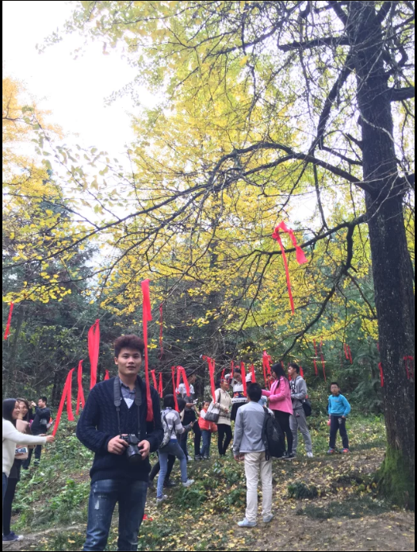

-
专业技能(熟练掌握)
HTML，CSS，JavaScript
-
专业技能(理解运用)
Ajax，json，XML
-
专业技能(理解运用)
HTML5，CSS3
-
专业技能(理解,运用)
AngularJS，bootstrap，,Jquery
-
专业技能(了解)
Node.js，php，Java, Oracle, mysql
-
专业技能(涉猎)
mongoDB，Java，
-
专业技能(了解)
webpack，sea.js，gulp
-
专业技能(熟练使用)
webstorm，sublime,Hbuilder

专业技能
技能#1
- 熟练掌握HTML，CSS进行静态页面的搭建和美化
- 熟练掌握JavaScript，能够使用js进行各种漂亮的页面交互效果和页面操作
- 能够使用JQuery进行简单的函数封装,以及DOM节点操作
技能#2
- 具备良好的JavaScript面向对象编程技术与思想.
- 了解AngularJS开发对移动端和PC端的开发(自学中)
- 能够运用bootstrap，使用bootstrap对页面搭建布局
技能#3
- 了解ReactJS地开发，了解jsx语法，能够进行简单的前端html页面的模块化开发
- 了解Node.js.
- 熟练使用webstorm,sublime,Hbulider等编译工具进行前端页面的开发
技能#4
- 了解mysql，Oracle数据库，能够进行后台数据库简单的增删改查(大学有开设此课程)
- 熟悉git进行分布式版本控制工具，了解svn的使用
- 了解php，Java语言，熟悉面向对象思想(大学有开设此课程)